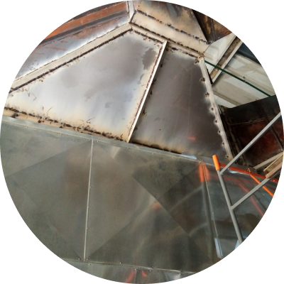

Инженеры ВОЛИНЖКОМПАНИ продолжают монтаж линии лущения BSY, Китай.
Линия состоит из оцилиндровочного станка, шпиндельного лущильного
станка, ножниц для рубки шпона и транспортеров. Оборудование
приходит по запчастям, инженеры выполняют сборку. Монтажники
изготовили металлические конструкции, подняли оборудование на нужную
высоту. После того как оборудование будет смонтировано, выполним
подключение и запустим оборудование в работу.

Ремонт газохода линии изготовления пеллет
В процессе эксплуатации польской линии по производству пеллет
прогорели газоходы сушилки.
Что сделано: - Демонтирован теплоизоляционный материал;
- Без снятия газохода произведена замента листов металла на
нержавейку;
- Усиление конструкции уголком;
- Восстановление изоляции;
- Запуск оборудования в работу.